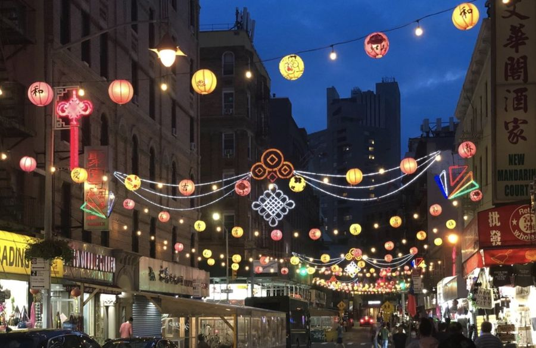
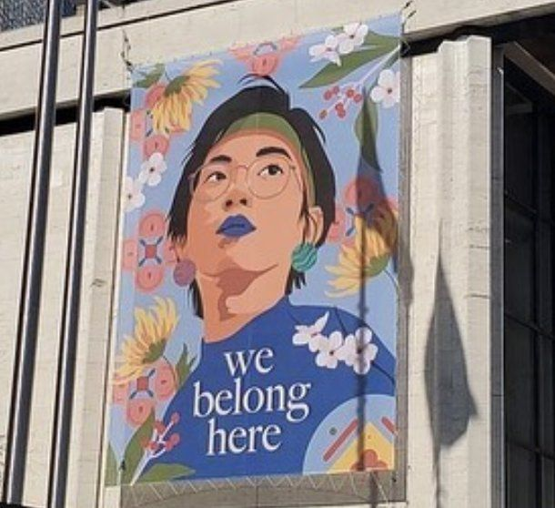
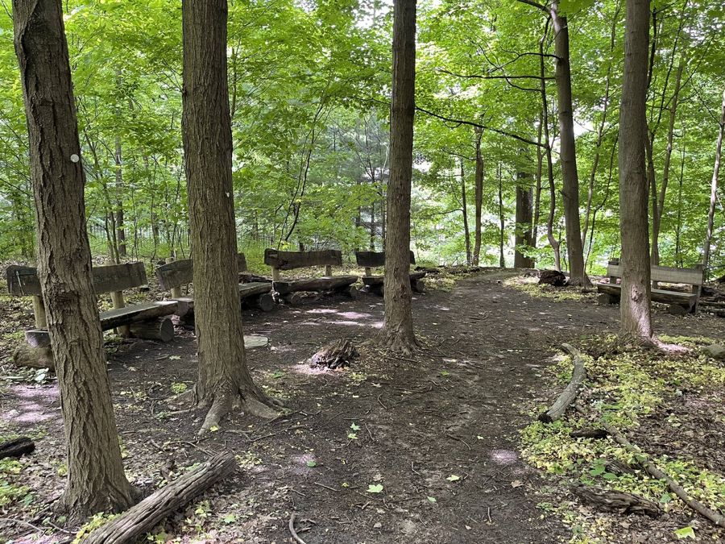
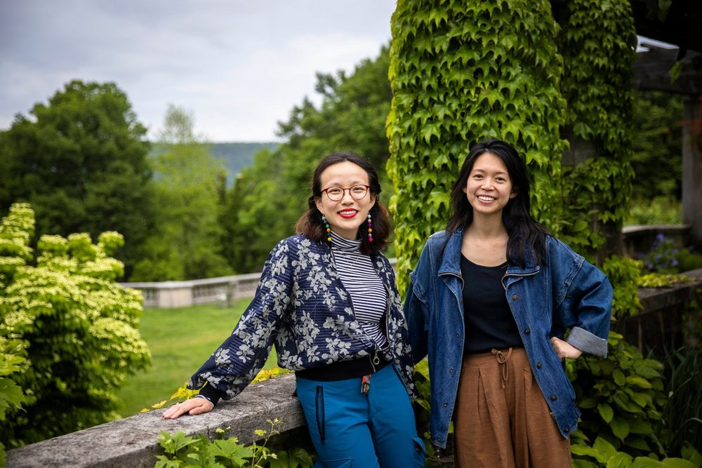

Listen to Chinatown
Chinatown · Manhattan, New York
"A site-specific Augmented Reality experience that takes listeners through Manhattan's Chinatown, following in the footsteps of the deep and expansive history of community members."
A World of Stories
Immersive stories, sounds, and music that bring the places around you to life.
What if you could hear a place differently?
Chromic creates immersive audio experiences that invite you to slow down, wander, and discover the stories held within the world around you.
Put on your headphones, step outside, and explore. As you move through a landscape, stories, music, field recordings, and soundscapes will unfold around you, revealing hidden layers and new ways to experience familiar places.
Every experience is rooted in a particular place. Some may lead you through a story. Others may invite you to listen closely, drawing your attention to something you might otherwise pass by. There is no wrong way to listen. Let the sounds around you become part of the experience.
Explore. Listen. Notice. Discover.
Step into a story. See where it takes you.
Co-commissioned by Washington Performing Arts and Tregaron Conservancy, in celebration of Washington Performing Arts's 60th anniversary season and Tregaron Conservancy's 20th anniversary.

Saturday, October 17, 2026 · Tregaron Conservancy, Washington, D.C.
"Blending original music, narration, storytelling, and sound design, Shimmers in the Field transforms a visit to Tregaron into a guided act of listening."
"The walk follows no fixed route: visitors chart their own paths, linger where they choose, and encounter the work differently on every visit and in every season."
"Along the way, listeners encounter original music, narrated stories, poetry, and threads of folklore nested throughout the park's distinct areas."
"We hope that this Soundwalk will bring you a piece of the joy and inspiration that we found while exploring the Tregaron conservancy over the years."
Lucy Yao, Chromic
"This is such a perfect way to mark the anniversaries of our two organizations–with a newly commissioned work that anyone with a cellphone or tablet can experience."
Jenny Bilfield, President & CEO, Washington Performing Arts
"Chromic's soundwalk shares their distinct experience, while at the same time inviting listeners walking our paths to engage with the composition in their own unique ways."
Lynn Parseghian, Executive Director, Tregaron Conservancy
"The GPS-triggered audio does the rest—no fixed route, no need to look at the phone."
Free for iPhone and Android. Scan the QR codes "posted at each entrance to Tregaron Conservancy", or find it through Tregaron.org and WashingtonPerformingArts.org.
"Enable location services, put on headphones, and press play." The artists recommend headphones for the fullest experience.
"Experience the walk in 10 minutes or an hour, from any starting point, and return across the seasons to discover new layers."
Every experience is rooted in a particular place.

Chinatown · Manhattan, New York
"A site-specific Augmented Reality experience that takes listeners through Manhattan's Chinatown, following in the footsteps of the deep and expansive history of community members."

Upper West Side · Manhattan, New York
An immersive concert experience and Augmented Reality soundwalk, in collaboration with the NY Philharmonic Very Young Composers Program and Amanda Phingbodhipakkiya.

Wave Hill Public Gardens · The Bronx, New York
A guided walk through the Herbert & Hyonja Abrons Woodland trail, citing Amanda Gorman's "The Hill We Climb", made with Wave Hill's ACES youth interns.

"Chromic, comprised of artists Lucy Yao and Dorothy Chan, blends classical music, toy piano, and electronics into genre-fluid performances, immersive installations, and AR (Augmented Reality) soundwalks. Drawing from their experiences as immigrants and the Asian-American diaspora, they create concerts and experiences that invite listeners to slow down and wonder."
Their award-winning work has been commissioned and presented by the Smithsonian National Museum of Asian Art, the New York Philharmonic, the National Gallery of Art, and the Baryshnikov Arts Center. They won the 2022 Grand Prize Young Classical Artists Trust (YCAT) and Concert Artists Guild (CAG) Victor Elmaleh Competition.
Hear Chromic live.
A new world may be closer than you think.